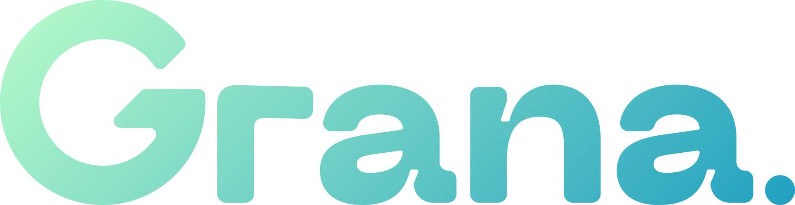

Meta Ads
Não configuradoSem dados reais. Frescor e integridade desconhecidos.

Painel administrativoMarketing / Aprendizado e relatórios
Hipóteses, experimentos e resultados semanais com fonte, amostra e limitações visíveis.
DADOS DE DEMONSTRAÇÃO. WeeklyReport fixture e7.v1. Cakto parcial e atribuição desconhecida suspendem conclusões afetadas; nenhuma recomendação muda campanha.
Sem dados reais. Frescor e integridade desconhecidos.
Cobertura parcial · atualização atrasada · integridade com 2 duplicados.
12 com origem desconhecida; elegíveis desconhecidos. Não inferir orgânico.
Máximo de três; fixture contém inconsistência.
Resumo semanal, sem execução ou gasto.
Semana completa; fontes podem ser parciais.
Rank, período, amostra, evidência, fonte, ação e limitações.
Inconsistência de fixture: Cakto está parcial enquanto reversões aparece como zero observado. Não tratar zero como válido; Beacon/E4 exige cobertura completa.
O WeeklyReport fornece campos de ExperimentSummary.
| ID | Estado | Métrica principal | Decisão | Aprendizado | Limitações |
|---|---|---|---|---|---|
| fixture-experiment-001 | Rascunho | Novas assinaturas pagas | Sem decisão | Ainda não registrado | Política de amostra pendente |
| fixture-experiment-002 | Concluído | Novas assinaturas pagas | Inconclusivo: amostra insuficiente | Repetir com prazo maior | Sem ressalva registrada |
Público, mudança principal, versões, guardrails, meta e orçamento não fazem parte do resumo semanal; não inferir.
PDF e CSV usam a mesma revisão do WeeklyReport.
reportId: fixture-report-001 · revision: 2 · snapshotId: fixture-origin-001.
Gerado em 12 out. 2026, 09:30 · America/Sao_Paulo · definições Beacon-E4.
Investimento Meta: sem valor, fonte não configurada. Assinaturas Cakto: valor parcial. Receita bruta: sem valor. Reversões: fixture inconsistente com cobertura Cakto parcial; não usar o zero como observado válido.
Atribuição desconhecida não é orgânica. Null continua sem valor. Nenhuma recomendação muda campanha, orçamento ou conteúdo.